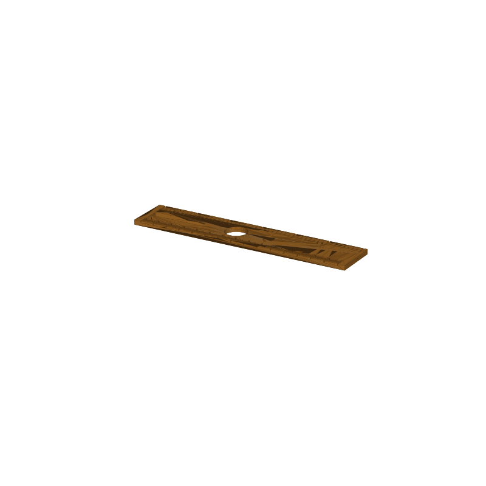

Ruler stencil STL, 15 cm with circle and slot cutouts
One thin plate, two jobs. The bottom edge carries millimeter, half-centimeter and centimeter ticks out to 15 cm. The top edge carries inch ticks out to 6 inches, in eighths. In the middle, three cutouts go all the way through: a 40 × 6 mm slot and two circles, 16 and 8 mm. Lay the plate over a journal page and you can rule straight lines, trace circles and slot out label banners without switching tools.
The ticks are 0.8 mm wide recesses cut 1.2 mm into the top face, not raised ridges, so the face stays smooth against paper and the whole thing prints flat in one pass. This page carries the measured spec sheet and preview renders so you can check the layout before you slice.

Spec sheet, measured from the mesh
| Spec | Value |
|---|---|
| Plate size | 160.0 × 32.0 × 3.5 mm |
| Scale, metric | Millimeter, half-centimeter and centimeter ticks over a 150 mm span, first tick 5 mm from the end |
| Scale, imperial | Eighth, quarter, half and full inch ticks to 6 in |
| Tick profile | 0.8 mm wide recesses, 1.2 mm deep, cut into the top face (cm ticks 7 mm long, half-cm 5 mm, mm 3.5 mm; inch ticks 7 / 5.5 / 4.5 / 3.5 mm) |
| Stencil cutouts | 40 × 6 mm slot, 16 mm circle, 8 mm circle, all through the plate |
| Volume | 15.4 cm³, about 16.2 g of PLA |
| Print time | About 0.8 h, PLA, 0.4 nozzle, 0.2 mm layers, no supports |
| Orientation | Prints flat on the plate in one pass |
| Mesh check | Watertight, winding consistent, 1 body, 3,752 faces, Euler -4 from the through-cutouts (trimesh 5.1.0, 2026-09-10) |
| Files | STL and 3MF plus a parametric generator script |
| License | Royalty free, no AI training |
How the ticks and cutouts are laid out
The metric scale runs along the bottom edge over a 150 mm span, one tick per millimeter, with every fifth tick longer and every tenth longer again. The imperial scale runs the top edge the same way in eighths of an inch. Both scales start 5 mm in from the end, so the first tick lands on a clean margin. The three stencil cutouts sit in the band between the scales: the slot near the left end, then the 16 mm circle, then the 8 mm circle.
Everything is a parameter in the generator (gen_ruler.py): plate length, width and thickness, tick widths and depths, the length of each tick class, the 150 mm span, and the slot and circle sizes with their positions. Change what you need, rerun, and the STL and 3MF rebuild at your dimensions.
Print notes
The plate prints flat on the bed in one pass, no supports. The only geometry that asks anything of the printer is the recessed top face: the ticks are 1.2 mm deep and 0.8 mm wide, so they read best when the top surface comes out clean. At standard PLA settings the whole thing runs about 0.8 hours and uses roughly 16 g of filament.
I have not test-printed this one yet. The geometry is mesh-checked: watertight, winding consistent. The one knob to watch is tick depth. If the ticks print muddy, drop tick_depth to 1.0 in the generator (gen_ruler.py) and rerun. If you print it, post a make with how the tick edges came out.
Where to get the files
The ruler is in the MakerWorld review queue with the rest of the organizer pool and goes public when the review clears.
More printed organizers, with a status table for the whole pool: 3D printed desk organizers and printable tools.
Compare all 20 models by solid mesh volume in the STL volume ledger.
FAQ
What can you stencil with it?
The 16 mm circle draws coin-size circles in a journal or sketch, the 8 mm one draws dots and button marks, and the 40 × 6 mm slot traces rectangle banners and label strips. The scales rule straight lines up to 15 cm or 6 inches.
Why recessed ticks instead of raised ones?
Recesses print in the same pass as the plate with no extra material, and the face stays flat, so the ruler doubles as a straightedge and nothing catches on the pen. Raised ticks would snag and add cleanup.
How long does it take to print?
About 0.8 hours in PLA on a 0.4 mm nozzle at 0.2 mm layers, roughly 16 g of filament, with no supports.